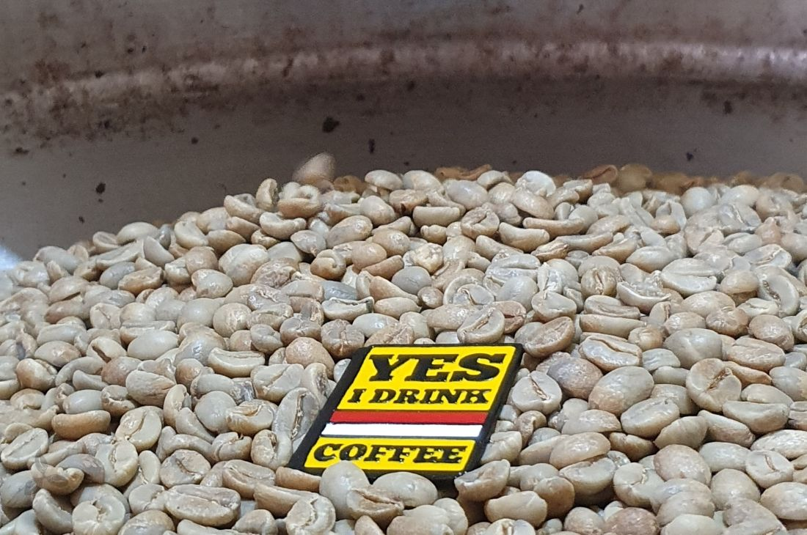
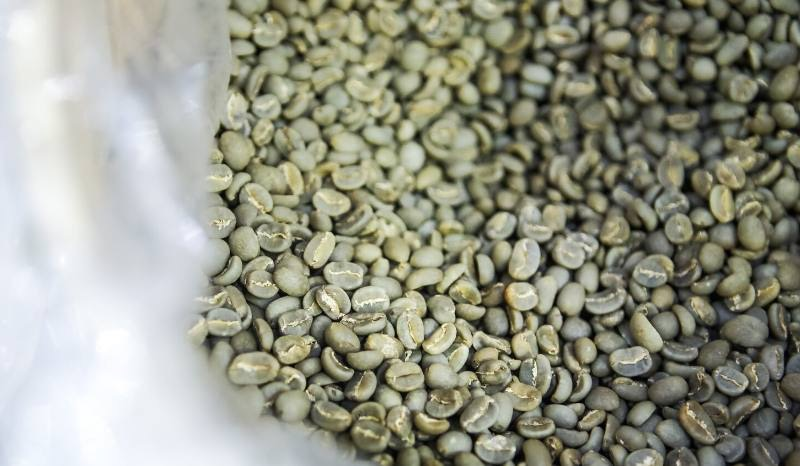
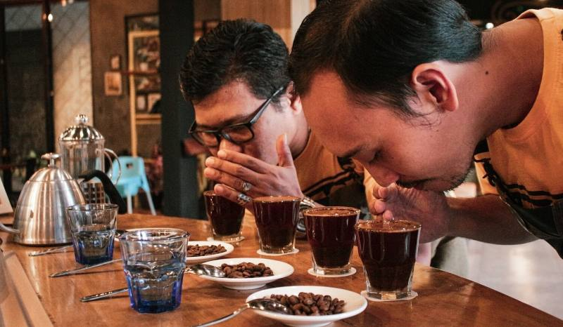
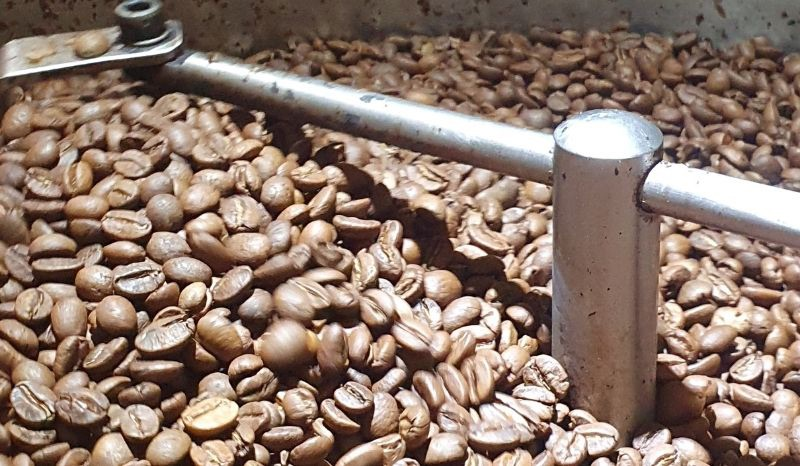
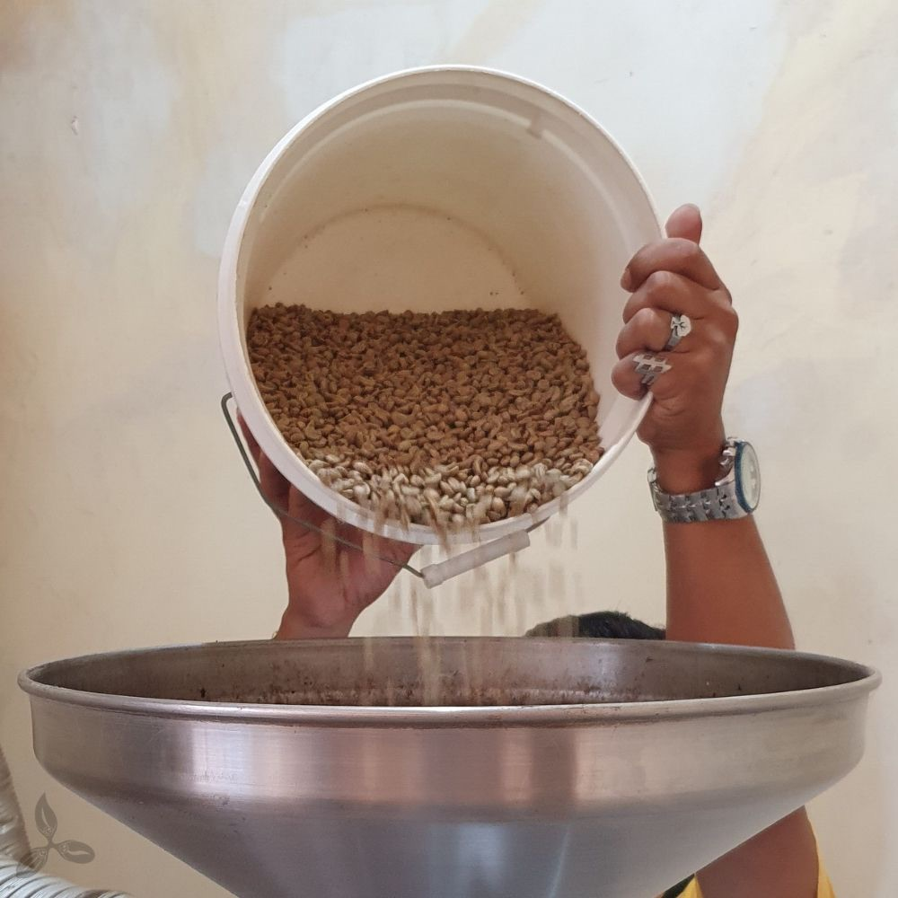
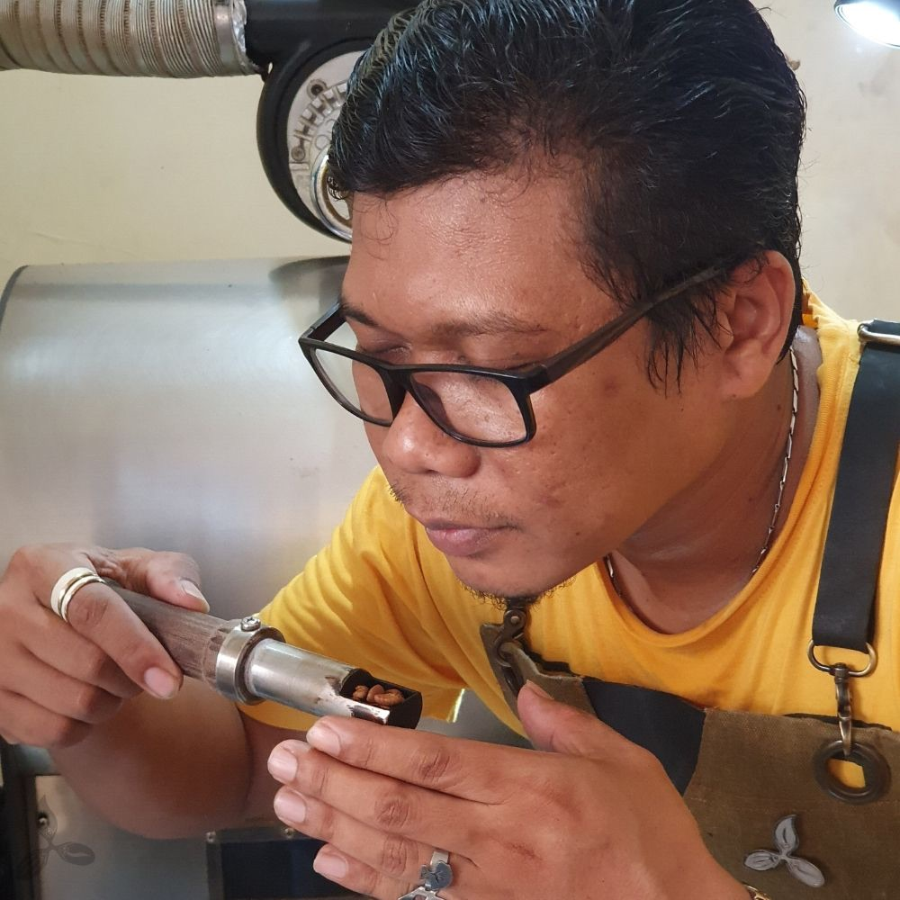
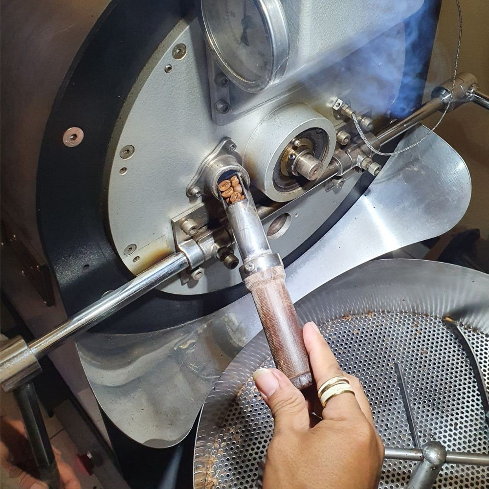
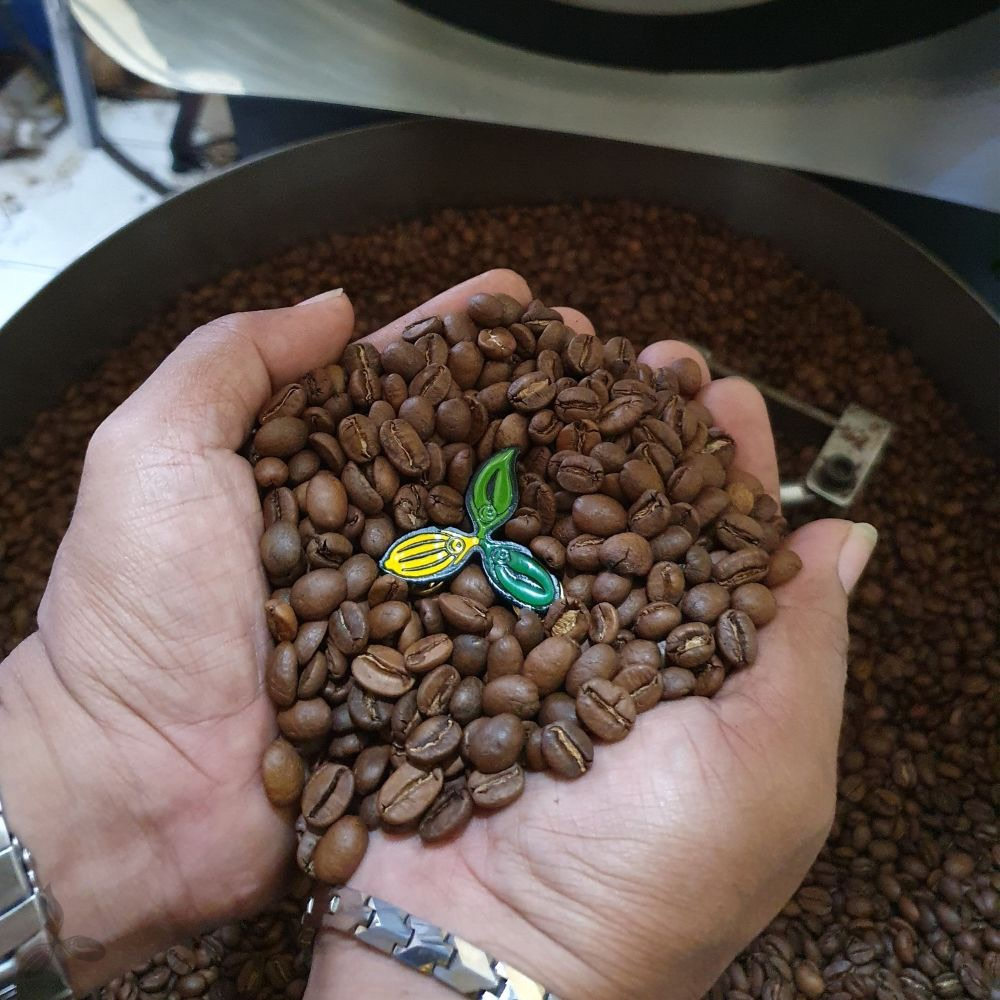

Selaras dengan kampanye kami: “Yes, I Drink Indonesian Coffee” maka Coffee Toffee berkomitmen untuk menggunakan biji-biji kopi terbaik Indonesia. Lingkungan kopi Indonesia tidak saja cocok dengan kopi dari luar negeri...

OUR COFFEE
Selaras dengan kampanye kami: “Yes, I Drink Indonesian Coffee” maka Coffee Toffee berkomitmen untuk menggunakan biji-biji kopi terbaik Indonesia. Lingkungan kopi Indonesia tidak saja cocok dengan kopi dari luar negeri...


Pengolahan kualitas dimulai pertama kali saat biji kopi baru datang di fasilitas gudang dan pemanggangan.

Kami melakukan cupping score terhadap dengan metode sandang sampling untuk biji kopi yang kami terima dari para petani dan supplier.

Kami memastikan kamu mendapatkan kopi dengan tingkat kesegaran terbaik sesuai dengan standar Coffee Toffee.
Proses pemanggangan adalah salah satu proses kunci dalam mendapatkan dan menjaga kualitas terbaik biji-biji kopi Coffee Toffee...




TEMPAT BERMAIN, TEMPAT BELAJAR KAMI
TEMPAT KAMI BERKONTRIBUSI SOSIAL
Kami percaya bahwa secangkir kopi yang kamu minum di gerai Coffee Toffee...
Langkah pertama untuk memastikan panen terbaik...
Buah kopi dipetik secara selektif saat matang merah...
Proses sortir sangat penting agar hanya buah yang sempurna diproses...
Pengolahan ceri dilakukan dengan proses basah untuk kualitas terbaik.
Kami melakukan sortir biji hijau agar mendapatkan biji terbaik...
Biji kopi disimpan dalam ruang sejuk dan kering, jauh dari sinar matahari langsung.